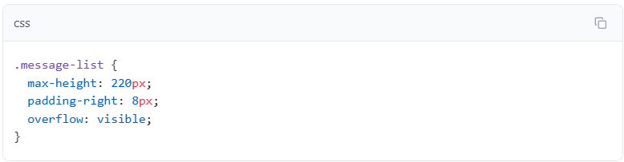
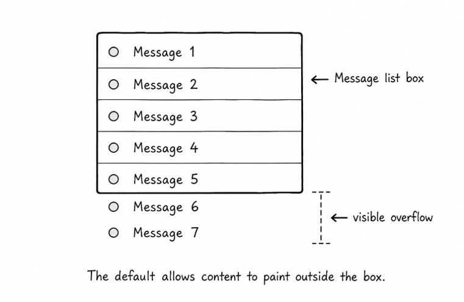
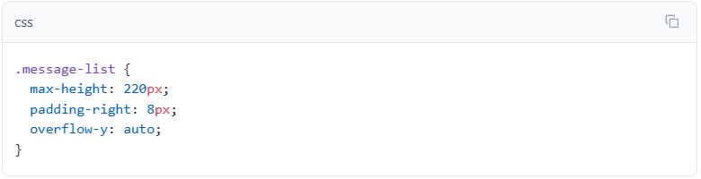
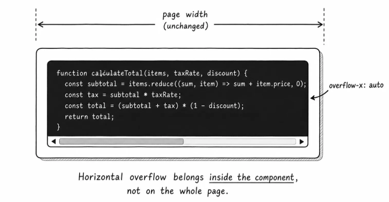

A very long lesson title that needs to stay on one line inside a compact card header
The title above is not a paragraph. It is a compact label, so it may need a different overflow strategy from normal body text.
The default is visible overflow:
The default value is overflow: visible, which means content is allowed to paint outside the box.
Add it explicitly so you can see the default:

The list has a height limit, but the extra messages may still spill out visually.
That can be useful for some decorative effects, but it is not good for a message panel. The panel now says it has one size while its content paints outside that space.

Control One direction when needed:
Sometimes only one direction is the problem.
The code sample is a good example. The command is one long line. You do not want the whole page to become wider just because one command is wide.
The fix is horizontal scrolling on the code box:

overflow-x controls horizontal overflow, and auto means the browser only adds horizontal scrolling when the content is wider than the box.
Use directional overflow when the problem is clearly one direction: wide tables, long code lines, tag rows, or tall panels.

Overflow values in one place:
Here is the practical map:
Value
What it does
visible
Lets content paint outside the box. This is the default.
auto
Adds scrolling only when the content needs it.
scroll
Shows scrollbars even when they may not be needed.
hidden
Clips overflowing content and does not show scrollbars.
You can apply the idea to both directions with overflow-x and overflow-y.
The useful question is: should the user still be able to reach the content?
If yes, use scrolling or let the layout grow. If no, clipping may be acceptable.